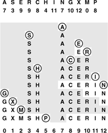

C++ Programming Robert Sedgewick - Princeton University Addison Wesley Professional Algorithms in C++, Parts 1–4: Fundamentals, Data Structure, Sorting, Searching, Third Edition
14.3. Linear Probing
If we can estimate in advance the number of elements to be put into the hash table and have enough contiguous memory available to hold all the keys with some room to spare, then it is probably not worthwhile to use any links at all in the hash table. Several methods have been devised that store N items in a table of size M > N, relying on empty places in the table to help with collision resolution. Such methods are called open-addressing hashing methods.
The simplest open-addressing method is called linear probing: when there is a collision (when we hash to a place in the table that is already occupied with an item whose key is not the same as the search key), then we just check the next position in the table. It is customary to refer to such a check (determining whether or not a given table position holds an item with key equal to the search key) as a probe.
Linear probing is characterized by identifying three possible outcomes of a probe: if the table position contains an item whose key matches the search key, then we have a search hit; if the table position is empty, then we have a search miss; otherwise (if the table position contains an item whose key does not match the search key) we just probe the table position with the next higher index, continuing (wrapping back to the beginning of the table if we reach the end) until either the search key or an empty table position is found. If an item containing the search key is to be inserted following an unsuccessful search, then we put it into the empty table space that terminated the search. Program 14.4 is an implementation of the symbol-table ADT using this method. The process of constructing a hash table for a sample set of keys using linear probing is shown in Figure 14.7.
This diagram shows the process of inserting the keys A S E R C H I N G X M P into an initially empty hash table of size 13 with open addressing, using the hash values given at the top and resolving collisions with linear probing. First, the A goes into position 7, then the S goes into position 3, then the E goes into position 9, then the R goes into position 10 after a collision at position 9, and so forth. Probe sequences that run off the right end of the table continue on the left end: for example, the final key inserted, the P, hashes to position 8, then ends up in position 5 after collisions at positions 8 through 12, then 0 throuh 5. All table positions not probed are shaded.

As with separate chaining, the performance of open-addressing methods is dependent on the ratio α = N/M, but we interpret it differently. For separate chaining, α is the average number of items per list and is generally larger than 1. For open addressing, α is the percentage of those table positions that are occupied; it must be less than 1. We sometimes refer to α as the load factor of the hash table.
For a sparse table (small α), we expect most searches to find an empty position with just a few probes. For a nearly full table (α close to 1), a search could require a huge number of probes, and could even fall into an infinite loop when the table is completely full. Typically, we insist that the table not be allowed to become nearly full when using linear probing, to avoid long search times. That is, rather than using extra memory for links, we use it for extra space in the hash table that shortens probe sequences. The table size for linear probing is greater than for separate chaining, since we must have M > N, but the total amount of memory space used may be less, since no links are used. We will discuss space-usage comparisons in detail in Section 14.5; for the moment, we consider the analysis of the running time of linear probing as a function of α.
The average cost of linear probing depends on the way in which the items cluster together into contiguous groups of occupied table cells, called clusters, when they are inserted. Consider the following two extremes in a linear probing table that is half full (M = 2N): In the best case, table positions with even indices could be empty, and table positions with odd indices could be occupied. In the worst case, the first half of the table positions could be empty, and the second half occupied. The average length of the clusters in both cases is N/(2N) = 1/2, but the average number of probes for an unsuccessful search is 1 (all searches take at least 1 probe) plus
Program 14.4. Linear probing|
This symbol-table implementation keeps items in a table twice the size of the maximum number of items expected, initialized to nullItem. The table holds the items themselves; if the items are large, we can modify the item type to hold links to the items.
To insert a new item, we hash to a table position and scan to the right to find an unoccupied position, using null items as sentinels in unoccupied positions in precisely the same manner as in we did in key-indexed search (Program 12.4). To search for an item with a given key, we go to the key hash position and scan to look for a match, stopping when we hit an unoccupied position.
The constructor sets M such that we may expect the table to be less than half full, so the other operations will require just a few probes, if the hash function produces values that are sufficiently close to random ones.
private:
Item *st;
int N, M;
Item nullItem;
public:
ST(int maxN)
{
N = 0; M = 2*maxN;
st = new Item[M];
for (int i = 0; i < M; i++) st[i] = nullItem;
}
int count() const { return N; }
void insert(Item item)
{ int i = hash(item.key(), M);
while (!st[i].null()) i = (i+1) % M;
st[i] = item; N++;
}
Item search(Key v)
{ int i = hash(v, M);
while (!st[i].null())
if (v == st[i].key()) return st[i];
else i = (i+1) % M;
return nullItem;
}
|
(0+ 1 + 0 + 1 + . . .)/(2N) = 1/2
in the best case, and is 1 plus
(N + (N – 1) + (N – 2) + . . .)/(2N) N/4 N/4
in the worst case.
Generalizing this argument, we find that the average number of probes for an unsuccessful search is proportional to the squares of the lengths of the clusters. We compute the average by computing the cost of a search miss starting at each position in the table, then dividing the total by M. All search misses take at least 1 probe, so we count the number of probes after the first. If a cluster is of length t, then the expression
(t+(t – 1) + . . .+ 2 + 1)/M =t(t+1)=(2M)
counts the contribution of that cluster to the grand total. The sum of the cluster lengths is N, so, adding this cost for all cells in the table, we find that the total average cost for a search miss is 1 + N/(2M) plus the sum of the squares of the lengths of the clusters, divided by 2M. Given a table, we can quickly compute the average cost of unsuccessful search in that table (see Exercise 14.28), but the clusters are formed by a complicated dynamic process (the linear-probing algorithm) that is difficult to characterize analytically.
Property 14.3. When collisions are resolved with linear probing, the average number of probes required to search in a hash table of size M that contains N = αM keys is about
for hits and misses, respectively.
Despite the relatively simple form of the results, precise analysis of linear probing is a challenging task. Knuth's completion of it in 1962 was a landmark in the analysis of algorithms (see reference section).
|